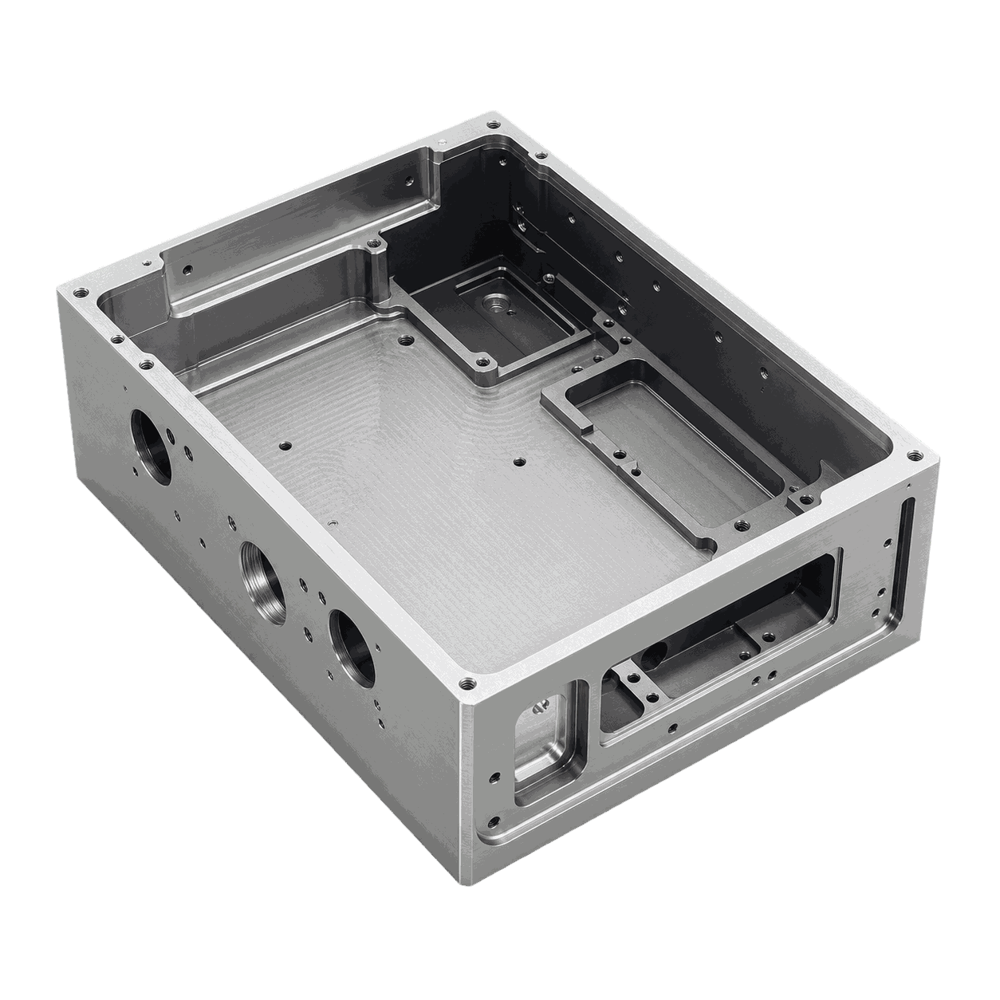
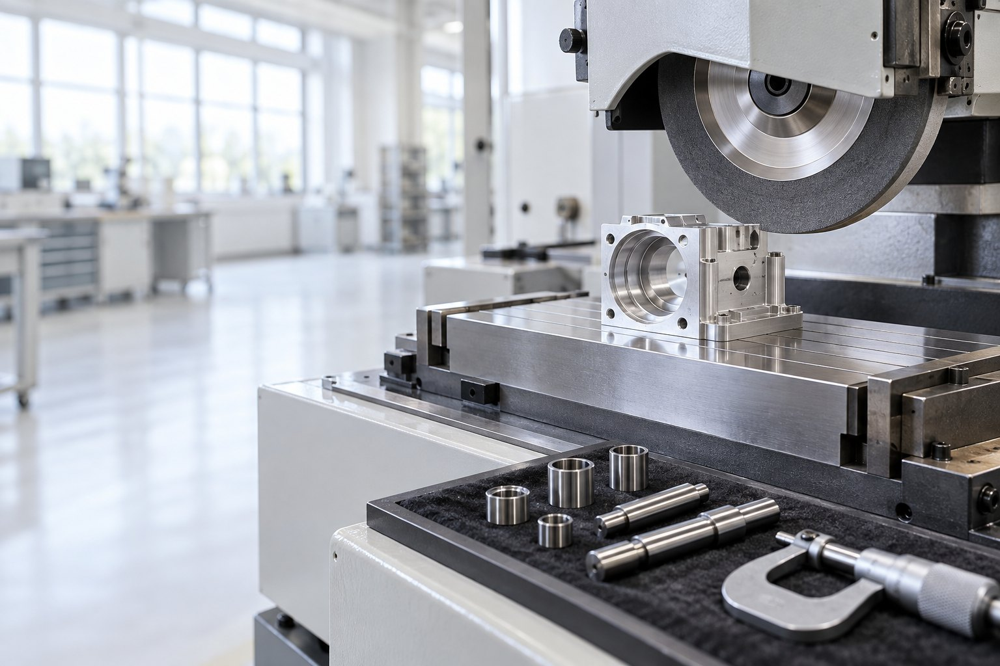
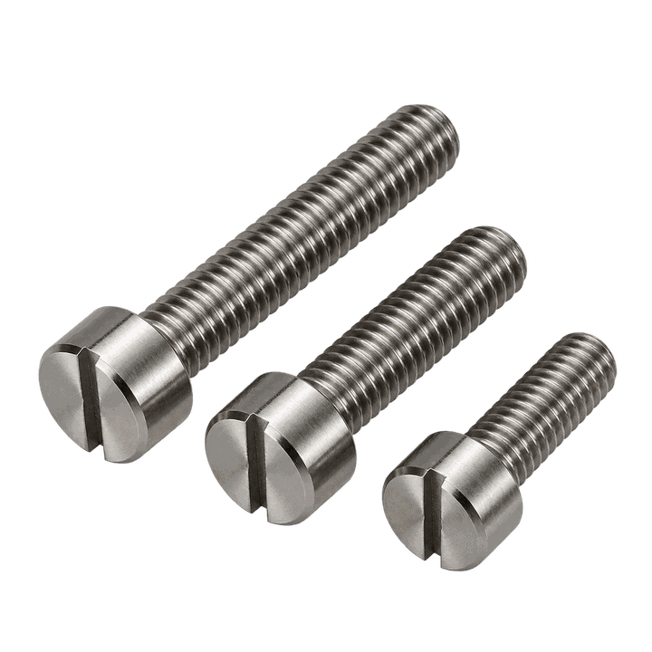
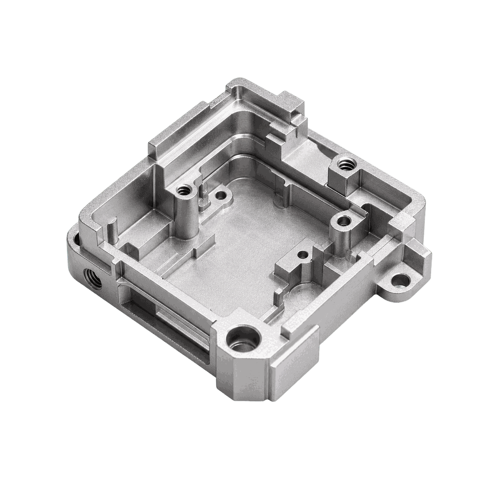
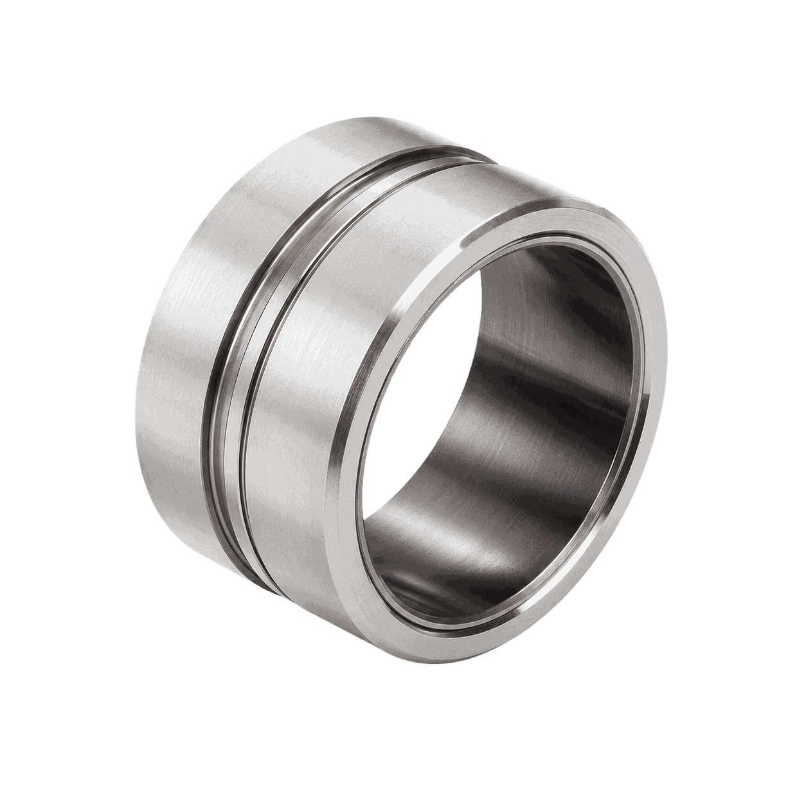
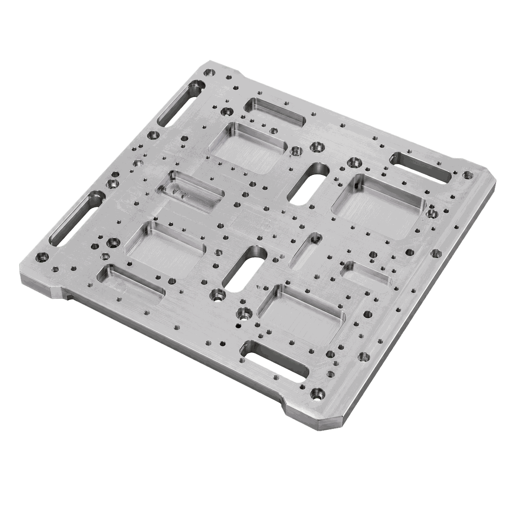
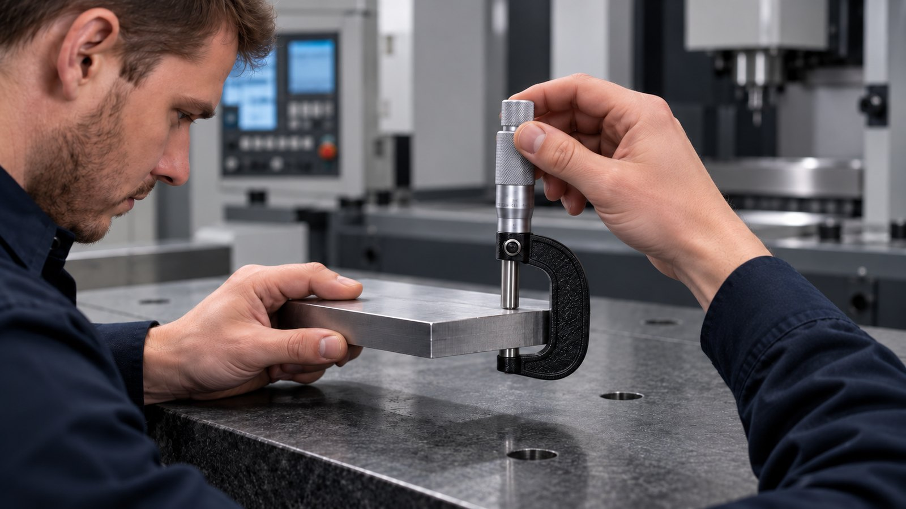
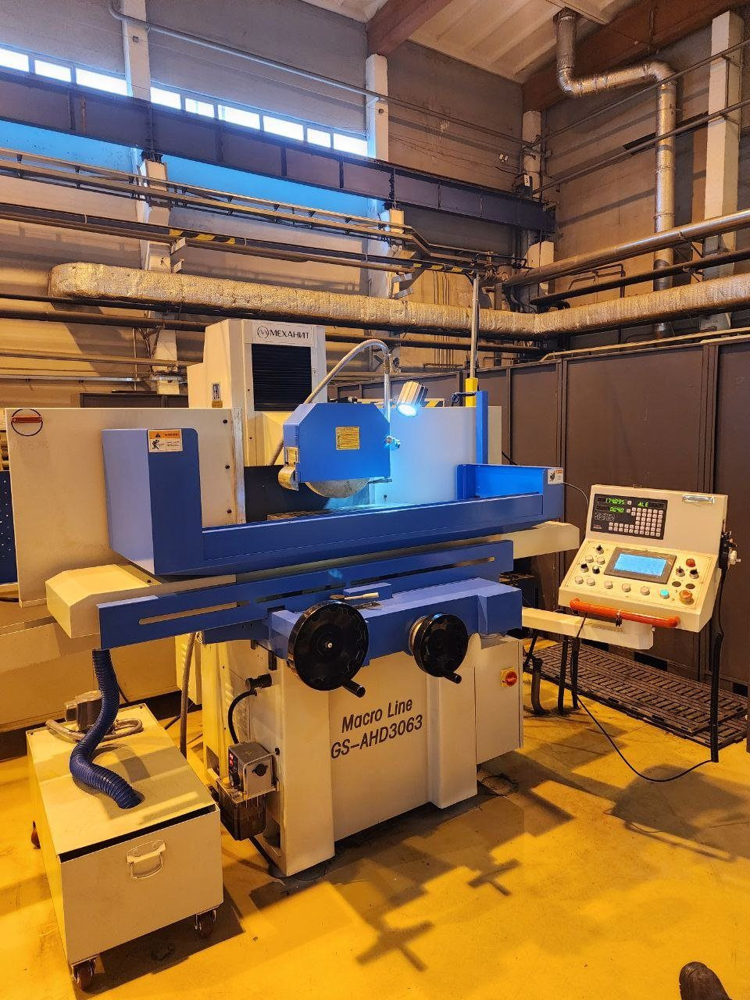
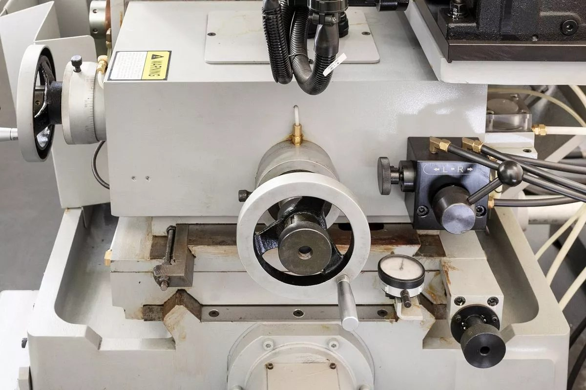

Корпус прибора
Технологическая задача
Обеспечить точность базовых плоскостей, посадочных отверстий и сопрягаемых поверхностей детали «Корпус прибора».

Решения для малых и средних точных деталей: корпуса, основания, втулки, винты и оси с высокими требованиями к базированию и чистоте обработки.

Обеспечить точность базовых плоскостей, посадочных отверстий и сопрягаемых поверхностей детали «Корпус прибора».

Обеспечить соосность шеек, стабильную геометрию детали «Прецизионные винты» и чистоту рабочих поверхностей.

Построить маршрут обработки детали «Основание датчиков» с понятным разделением операций и подбором оборудования под каждую операцию.

Построить маршрут обработки детали «Прецизионная втулка» с понятным разделением операций и подбором оборудования под каждую операцию.

Построить маршрут обработки детали «Плата-основание» с понятным разделением операций и подбором оборудования под каждую операцию.

Обеспечить соосность шеек, стабильную геометрию детали «Прецизионная ось» и чистоту рабочих поверхностей.
Реальные запуски оборудования на производствах: что поставили, как вводили в эксплуатацию, что получил заказчик.

Внедрения · 01.07.2026Плоскошлифовальный станок для обработки деталей с высокой точностьюЧитать →
Внедрения · 31.01.2026Запуск плоскошлифовального оборудования: что проверяют на ПНРЧитать →
Внедрения · 12.04.2026Бесцентровое шлифование в производстве: как проходит ввод станка в эксплуатациюЧитать →Как проходит проект от чертежа до серии — шесть шагов. Нужен участок целиком — комплексное оснащение.